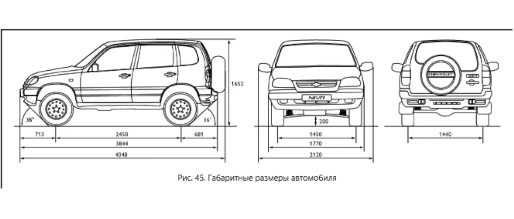

ТЕХНИЧЕСКАЯ ХАРАКТЕРИСТИКА АВТОМОБИЛЯ
Основные параметры и размеры
характеристикидвигательмассаразмерырасход
| Параметр | Значение |
|---|---|
| Модель автомобиля | ШЕВРОЛЕ НИВА |
| Тип кузова | Универсал |
| Схема компоновки | С продольным расположением двигателя и постоянным приводом на все колёса |
| Количество мест, чел. | 5 |
| Количество мест при полностью сложенных задних сиденьях, чел. | 2 |
| Снаряжённая масса, кг | 1400 |
| Разрешённая максимальная масса (РММ), кг | 1800 |
| Дорожный просвет со снаряжённой массой и шинами 205/70R15, мм | 200 |
| Полная масса буксируемого прицепа, не оборудованного тормозами, кг | 600 |
| Полная масса буксируемого прицепа, оборудованного тормозами, кг | 1200 |
| Модель двигателя | ВАЗ-2123 |
| Количество и расположение цилиндров | 4 в ряд |
| Рабочий объём, л | 1,69 |
| Диаметр цилиндра и ход поршня, мм | 82 × 80 |
| Степень сжатия | 9,3 |
| Номинальная мощность (нетто) по ГОСТ 14846, кВт | 58,5 |
| Номинальная частота вращения коленчатого вала, мин⁻¹ | 5200 |
| Максимальный крутящий момент по ГОСТ 14846, Н·м | 127,5 |
| Частота вращения при максимальном крутящем моменте, мин⁻¹ | 4000 ± 200 |
| Минимальная частота вращения на режиме холостого хода, мин⁻¹ | 850 ± 30 |
| Система питания/зажигания | ЭСУД — электронная система управления двигателем |
| Марка бензина, ГОСТ Р 51105 | Премиум-95 (АИ-95) |
| Свечи зажигания | А17ДВРМ |
| Максимальная скорость, км/ч | 140 |
| Время разгона с переключением передач до 100 км/ч, с | 19 |
| Расход топлива на 100 км при смешанном цикле, л | 10,8 |
| Габаритные размеры, мм | См. рис. 45 |

Примечание:
При буксировании прицепа вертикальная нагрузка на шар тягово-сцепного устройства в статическом состоянии должна быть в пределах 25–50 кг.
При буксировании прицепа вертикальная нагрузка на шар тягово-сцепного устройства в статическом состоянии должна быть в пределах 25–50 кг.